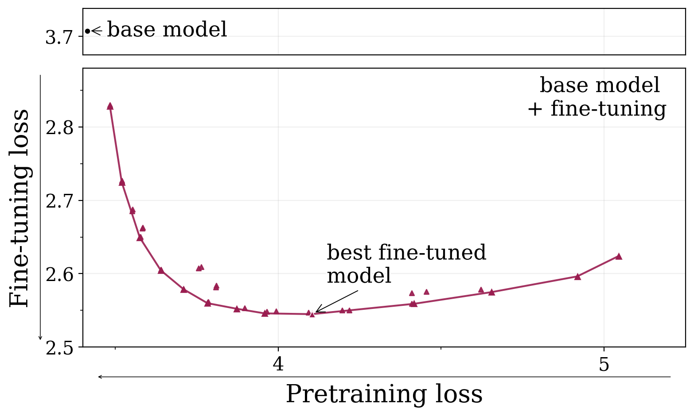
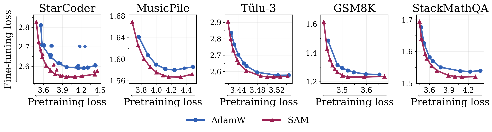
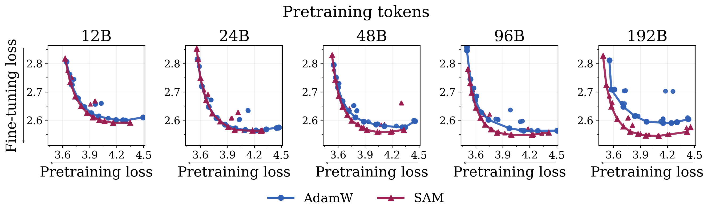
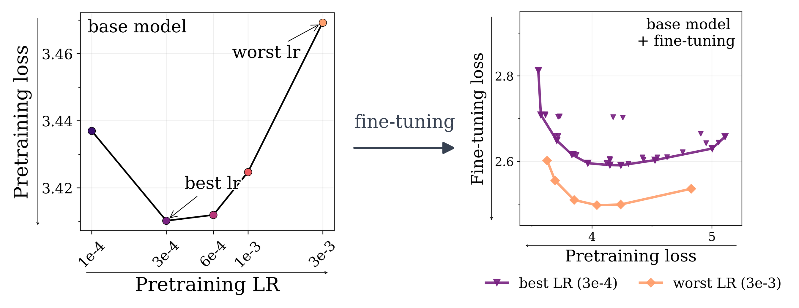

Carnegie Mellon University
*Equal contribution †Equal advising
Pretraining optimizers are tuned to produce the strongest possible base model, on the assumption that a stronger starting point yields a stronger model after subsequent changes like post-training and quantization. This overlooks the geometry of the base model which controls how much of the base model's capabilities survive subsequent parameter updates. We study three pretraining optimization approaches that bias optimization toward flatter minima: Sharpness-Aware Minimization (SAM), large learning rates, and shortened learning rate annealing periods. Across model sizes ranging from 20M to 150M parameters, we find that these interventions consistently improve downstream performance after post-training on five common datasets with up to 80% less forgetting. These principles hold at scale: a short SAM mid-training phase applied to an existing OLMo-2-1B checkpoint reduces forgetting by 31% after MetaMath post-training and by 40% after 4-bit quantization.
Pretraining optimizers are tuned to make the strongest base model. But in a multi-stage pipeline we want a model that stays strong after further modification.
Pretraining loss alone doesn't capture a base model's adaptivity. The hidden variable is forgetting: fine-tuning performance depends on how much of the pretrained knowledge the new task relies on still survives the update. So base models that forget less end up learning more — the right yardstick is the learning–forgetting tradeoff 👇, not base quality.

Main Claim: Reducing the sharpness of the pretraining loss improves the learning–forgetting tradeoff.
SAM (Foret et al., 2021) minimizes the worst-case loss in a neighborhood of the weights, steering pretraining into wider, flatter, forgetting-resistant minima.


SAM improves the learning–forgetting tradeoff across datasets, and its advantage over AdamW grows with more pretraining tokens.
Gradient descent settles at the edge of stability (Cohen et al., 2021), where the largest Hessian eigenvalue (sharpness) is capped at ≈ 2/η by the learning rate η — so a larger peak LR bounds sharpness lower and forces a flatter minimum.

Higher peak LR improves the learning–forgetting tradeoff.
(1) The intuition behind why minimizing sharpness helps, (2) a Hessian analysis of our sharpness approximation, and (3) scaling behaviours across model sizes and token budgets.
@misc{watts2026sharpnessawarepretrainingmitigatescatastrophic,
title={Sharpness-Aware Pretraining Mitigates Catastrophic Forgetting},
author={Ishaan Watts and Catherine Li and Sachin Goyal and Jacob Mitchell Springer and Aditi Raghunathan},
year={2026},
eprint={2605.02105},
archivePrefix={arXiv},
primaryClass={cs.LG},
url={https://arxiv.org/abs/2605.02105},
}